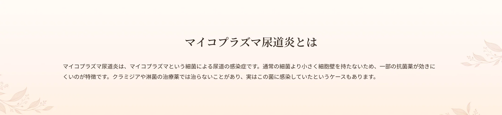
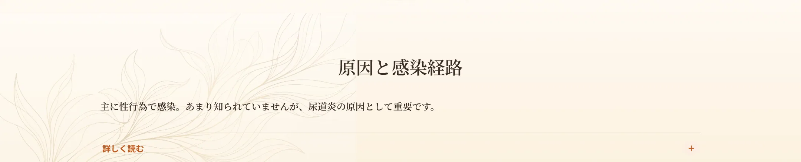
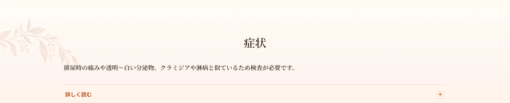
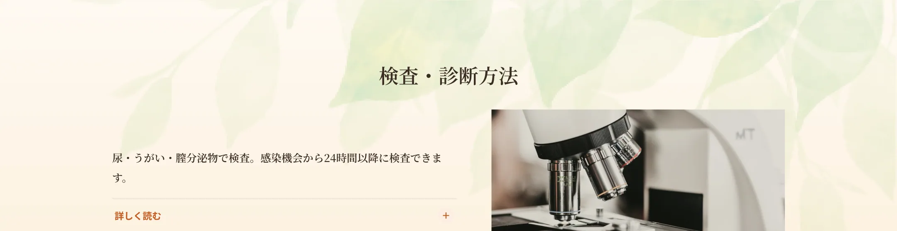
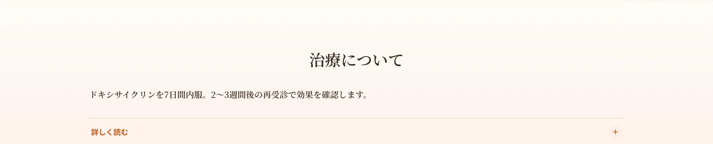
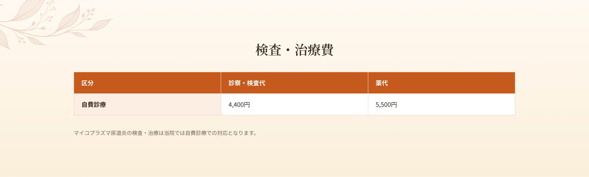
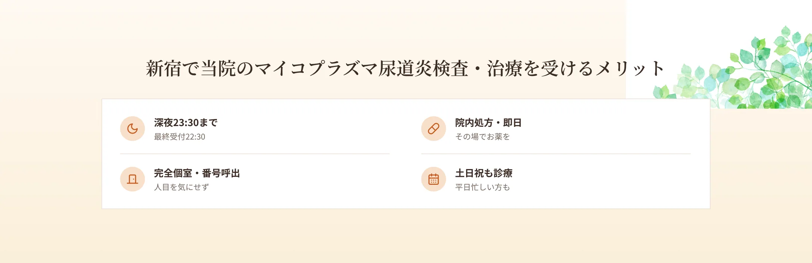
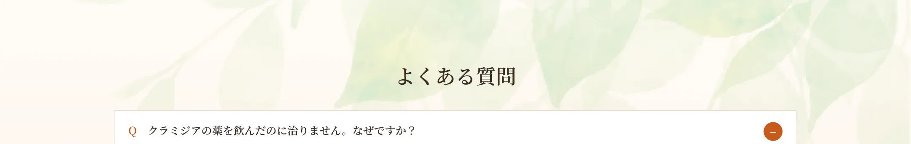

新宿駅から徒歩6分、エイチクリニック新宿では、マイコプラズマ尿道炎の検査・治療を行っています。マイコプラズマは、クラミジアや淋菌の治療薬では治りにくいことがあり、「治療したのに症状が続く」というときに見つかることがある感染症です。当院は匿名・完全個室・呼び出し番号制で、深夜23時30分まで・土日祝も受診可能。原因を確認したうえで適切な治療を行います。


性感染症を起こすマイコプラズマ・ウレアプラズマには複数の種類があり、性行為によって感染することが多いです。クラミジアや淋菌に比べて知られていませんが、尿道炎の原因として重要です。

男性は、尿道からの透明または白っぽい分泌物、排尿時の痛みや灼熱感、頻尿、尿意切迫感などがみられます。これらはクラミジアや淋病と症状が似ているため、正確な診断には検査が必要です。女性は無症状のことが多いものの、おりものの異常、排尿時痛、下腹部痛、不正出血などがみられることがあります。喉に感染して痛みや咳が出ることもあります。


男性は尿検査・うがい検査、女性は膣分泌物（綿棒での採取）・うがい検査で調べます。感染してから24時間以上経過してから検査が可能です。クラミジア・淋菌の検査で陰性なのに症状が続く場合に、マイコプラズマを疑って検査します。

淋菌感染が否定的な尿道炎には、アジスロマイシンではなくドキシサイクリンやシタフロキサシンの一定期間の投与が第一選択になることが多いのが現状です。当院ではドキシサイクリンを1日2回・100mgで7日間内服する治療を行います。効果判定のため、2〜3週間後の再受診をおすすめします。耐性により効きにくいことがあるため、治癒の確認が大切です。




A.マイコプラズマが原因の場合、クラミジア・淋菌の薬では治らないことがあります。検査をおすすめします。
A.感染機会から24時間以上経過してから検査が可能です。
A.効果判定のため2〜3週間後の再受診をおすすめします。
A.当院では自費診療での対応です。
A.深夜23:30まで（最終受付22:30）対応しています。